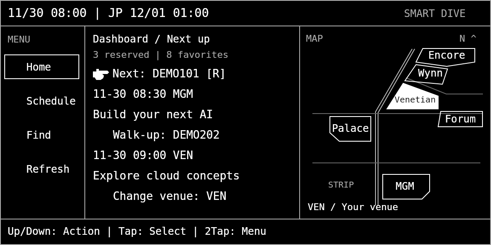

FOR EVEN G2 · FOR IPHONE USERS
Choose your next session from your cockpit.
Smart Dive is a re:Invent session cockpit with a UI and interaction model optimized for Even G2 smart glasses and the R1 ring. Connect with your iPhone, then choose your next action from the information in front of you.
No Even G2? Use the same cockpit in a web browser. You still need Smart Dive Connect on iPhone and a Builder ID registered for re:Invent.
Use in your web browserFor G2 use, you need an iPhone, Even G2, and the Even Realities app. R1 controls are supported. Personal schedules and reservations require a re:Invent-registered Builder ID.
Inside your cockpit
- See your next reservation and reserved sessions
- Find sessions by venue or topic
- Read abstracts and AI explanations; select terms for a deeper Dive
- Locate a session venue on the schematic map
- Review the date and venue, then confirm a seat reservation
Getting started and connecting
Without G2, choose “Use in your web browser”, copy the connection code shown there, and continue with step 2.
1 · Open Smart Dive on G2
- Open the Even Realities app on iPhone. Tap the four-square icon at the bottom to open Even Hub.
- Open My Plug-ins, then tap Developer Hub at the top.
- Open Prototype Mode and use the built-in scanner to scan the fixed Smart Dive QR below. Some app versions call this Developer Center.
- When the Smart Dive connection screen opens, tap Copy code on your iPhone inside the Even app. Copying is done in the phone app, not on the G2 glasses.
- Switch to Smart Dive Connect and paste. After success, continue to sign in and Send connection without copying again. Return to the original screen in the Even app and tap Check connection.
If you are viewing the QR on the same iPhone, display it on another device or computer to scan it. The launch QR does not need to be regenerated each time.
The launch screen shows a connection code. Copy it in the Even app on your iPhone first. The cockpit stays hidden until you have connected.
2 · Connect with Smart Dive Connect
Install Smart Dive Connect on your iPhone. This review build is installed using Xcode. A TestFlight invitation link is not available yet.
- Paste the code copied in the Even app or Web browser into Connect.
- Sign in to AWS with Builder ID.
- Tap Send connection.
- Return to the original Even app or Web browser screen and tap Check connection.
Optional: use the Web companion view
You can also operate the G2 cockpit in a browser. Connecting through the iPhone Connect app is still required.
Open Web companion viewYour display and controls
On G2, the image frame below is the glasses display area. The same screen works in a web browser. The display language is English.

Las Vegas and Japan time.
Home / Schedule / Find. The box marks the open menu; the hand marks the focused item.
Home shows your next reservation and an upcoming walk-up session at your selected venue. Other screens show lists, details, abstracts, and AI explanations.
The selected venue is white. Home uses the venue you selected manually.
Context-specific tap and back actions.
- Up / down: move between items, sessions, or pages
- Tap: select the item marked by the hand
- Double tap: go back
- Hold: refresh the list. Menu Refresh: reload schedule and catalog